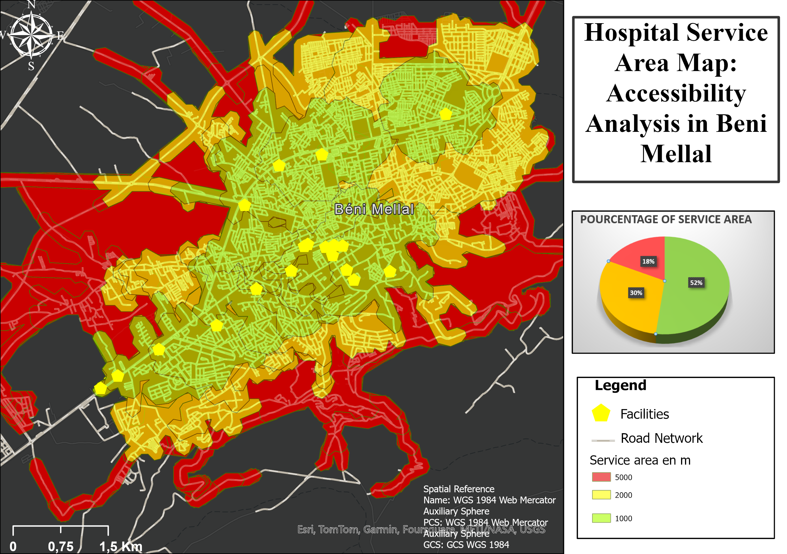

3D Visualization
Morocco Digital Terrain Model
3D reconstruction of Morocco's landscape from elevation data, built for territorial and educational presentation.
Turning raw data into decisions
I help organizations map, model and understand their land, water and environment from satellite imagery to interactive WebGIS platforms.

I'm a Geospatial Engineer and GIS Analyst with a specialization in Remote Sensing, spatial databases and hydrological modeling. Over the past years I've partnered with research teams and private clients to turn scattered geographic data satellite scenes, elevation models, field surveys into maps, dashboards and reports that hold up to scrutiny.
My work spans environmental monitoring, urban and land-use planning, water resource assessment and 3D terrain visualization. Whatever the brief, the process is the same: understand the question being asked, choose the right tool for the data, and deliver something a non-specialist can act on with confidence.
Focused engagements for teams and clients needing geospatial answers, not data.
Custom thematic and reference maps built for clarity — from field survey to print- and web-ready cartography.
Site suitability, proximity, network and overlay analysis to support planning and investment decisions.
Satellite and aerial imagery processing — land cover, vegetation indices, and change detection over time.
Supervised and unsupervised classification pipelines for land use, crop type and environmental monitoring.
Interactive web maps and dashboards for sharing spatial data with stakeholders in real time.
Scripted geoprocessing workflows that turn repetitive manual GIS tasks into repeatable, auditable pipelines.
Environmental impact assessment support — habitat, risk and land-degradation mapping.
Watershed delineation, water yield and flood-risk modeling with SWAT and HEC-HMS.
Digital terrain models and 3D visualization for presentations, planning and public communication.
A cross-section of mapping, modeling and analysis work across WORLD .



Have a dataset, a site, or a question you need spatial insight on? Tell me about it.